| Take | Hero at 1024, then renders at 128 / 64 / 48 / 32 / 16 css px (2× retina sources), plus the 16px squint magnified | Rubric | Verdict |
|---|---|---|---|
| A · icon.svghand-authored layered SVG — SHIPS |
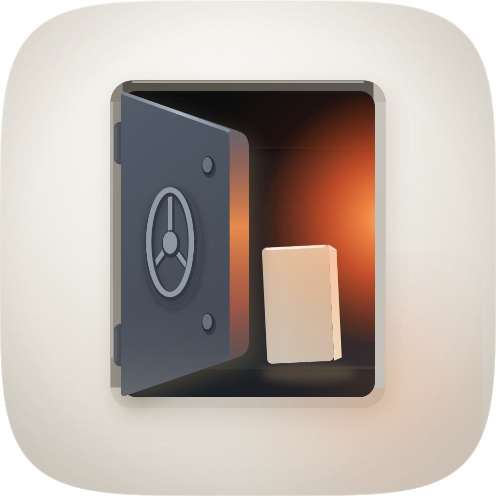 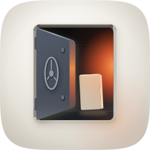 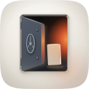 |
11 / 12 | Four named layers over the family squircle; checks 1–4 all clear on the renders above. 16px luminance contrast 0.266 against a family median of 0.175, from a large dark mass rather than from the accent. The value stack measures coherent on the 1024 render: porcelain 0.822, door face 0.079–0.094, unlit back wall 0.008, lit wall 0.249, lit leading edge 0.271 — opening against wall 6.75:1, door against the wall behind it 2.2–2.5:1. The accent owns 4.5% of the tile as a saturated core and is spent only as interior light. Loses one point on #10: the mark (portal, door, plate) survives a mono tint, but the meaning of the light does not, so a tinted variant reads as an empty dark room. |
| C · icon-engineC-bc45d8.pngGPT Image 2 raster, corpus-referenced — material target, cannot ship |
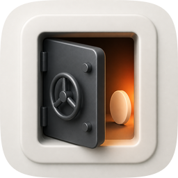 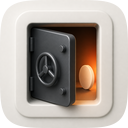 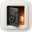 |
8 / 12 | Best material in the set and the strongest independent evidence for the direction: briefed from the same spec with four porcelain-register corpus exemplars, it produced this composition unprompted. Hard-fails #1 — it bakes its own rounded tile and a drop shadow into the artwork, so masking it to the family squircle yields a tile inside a tile. Hard-fails #10 as a flat pre-masked raster. It also misread "plate" as a coin-shaped disc, which loses the record. Three of its constructions were rebuilt into A: the door as a rounded slab rather than a sharp quad, two barrel hinges on the hinge edge, and the handwheel as a modelled torus with a dark side rather than a stroked ellipse. |
| B · icon-engineB-arrow-951894.svgArrow 1.1 vector take — lost |
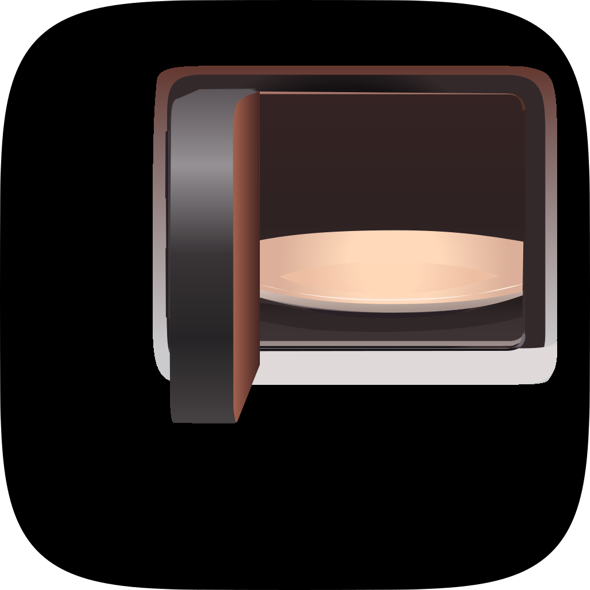 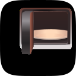 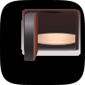 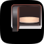 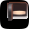 |
4 / 12 | Real editable vector, and wrong in the two ways that cannot be salvaged. Its artwork is 196.7×175.8 with a transparent ground, so it has no porcelain tile at all and has to be letterboxed before it can be audited — #1 and #2 both hard-fail. Its interior is maroon-brown rather than graphite-on-porcelain, which is a second hue family the spec does not have (#6), and it drew neither handwheel nor reveal, so nothing in it says strongroom. Its one agreement with C is worth recording: it too gave the door a thick rounded slab profile, which is what put that change into A. |
| prior · prior-brackets.svgthe icon being replaced, scored for the record |
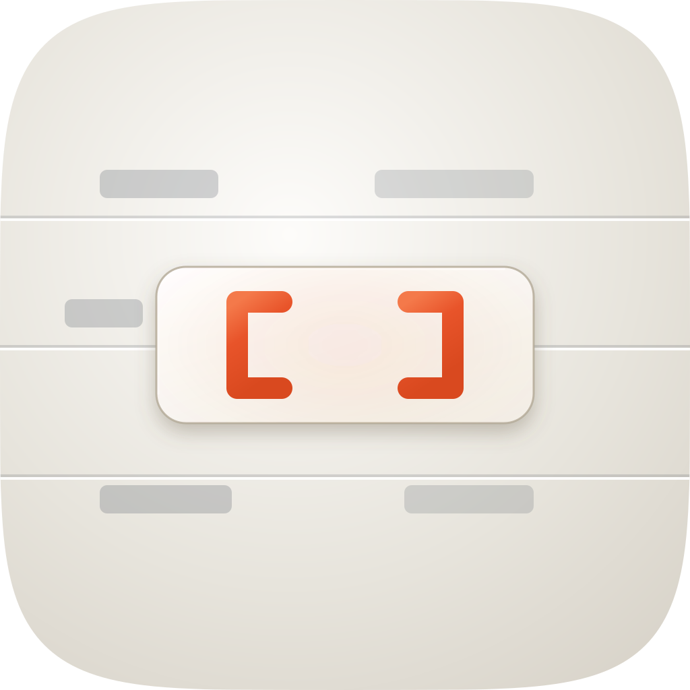 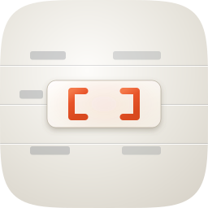 |
6 / 12 | Hard-fails #4: 16px luminance contrast 0.050, the joint lowest of the thirty-five icons in this marketplace against a median of 0.175 — a blank tile on the shelf, as the magnified squint cell shows. Fails #11 as well: its device is two thin bracket strokes, which is typography rather than a mined subject, and nothing in it says data room, portal, investor or disclosure. Its grey pill rows are the substrate five plugins in this set already share. Kept on disk and in this sheet so the replacement is a comparison rather than an assertion. |
| Take | 16px luminance contrast | Note |
|---|---|---|
| A (ships) | 0.2734 | 1.57× the family median |
| C raster | 0.2999 | higher, but unshippable on #1 |
| B Arrow | 0.2487 | from a maroon field, not a mined mass |
| prior | 0.0498 | joint lowest of 35 |
| family median | 0.1745 | n=36, same pipeline |
Contrast is the standard deviation of sRGB-encoded luminance over a 16×16 downsample of each take's 256px render, composited on white. It reproduces the family audit's published 0.049 for the prior icon, so these are comparable rather than merely similar. Accent share of take A: 7.4% of tile pixels warm, 4.5% a saturated core. Figure-ground was measured with a dilated-ring pass and then re-measured with clean patches, because the ring's surround was contaminated by the door's own lit leading edge and reported 1.07:1 for an object that reads at 2.2–2.5:1.